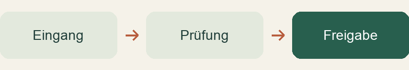

Weniger Übergaben. Mehr Zeit.
Heute dauert die Bearbeitung 30 Minuten pro Fall. Was verändert sich, wenn wir Rückfragen reduzieren oder die Erfassung automatisieren?

50 Fälle500 Fälle
Zeitersparnis pro Monat
26,7 StundenHeute100 Std.
Klarer Ablauf73,3 Std.
Modellannahmen: 30 / 22 / 15 Minuten je Fall. Ersparnis = (30 − Variantenzeit) × Fallzahl ÷ 60. Fiktive Werte; Einführungsaufwand und Kosten sind nicht berücksichtigt. So wird gerechnet →